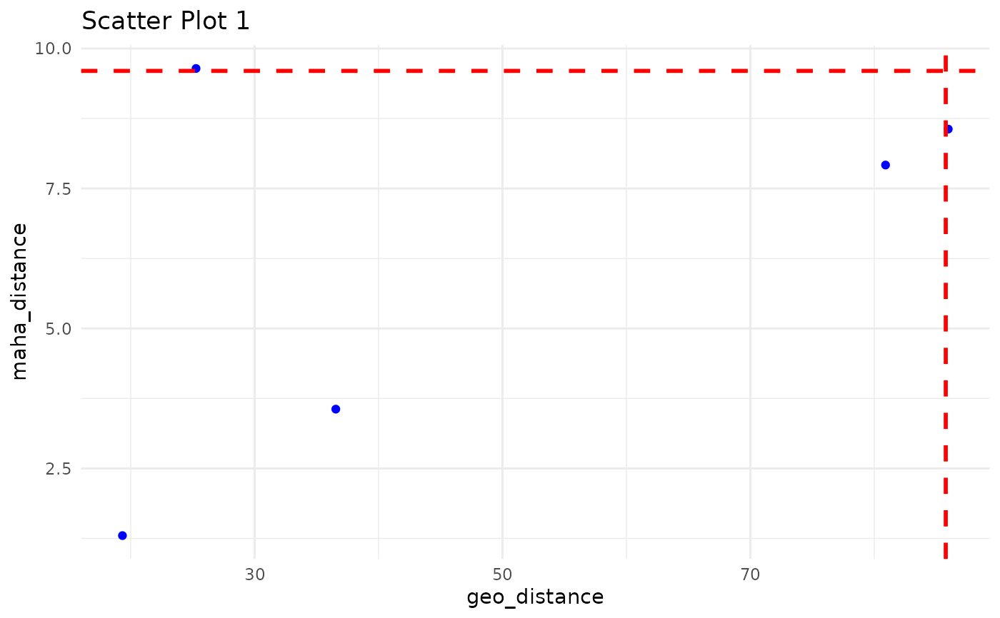
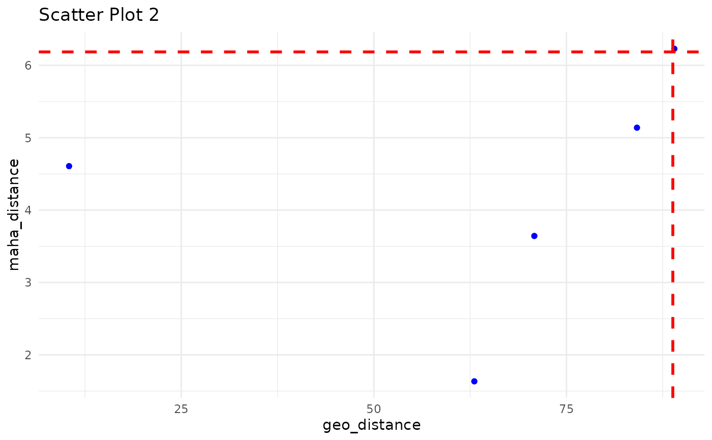

Scatter Plot between geo_distance vs maha_distance with geo- and maha- Quantile Threshold to Demonstrate the Outliers outside those threshold.
ec_plot_distance.RdScatter Plot between geo_distance vs maha_distance with geo- and maha- Quantile Threshold to Demonstrate the Outliers outside those threshold.
Usage
ec_plot_distance(
x,
geo_quantile = 0.99,
maha_quantile = 0.99,
iterative = TRUE,
geo_distance = "geo_distance",
maha_distance = "maha_distance"
)Arguments
- x
iteration_list derived from ec_flag_outlier can be used to plot these scatter plots between geo_distance vs maha_distance
- geo_quantile
value with geo_quantile percentile would consider has threshold for geo_distance to derive the outlier. e.g. default 0.99
- maha_quantile
value with maha_quantile percentile would consider has threshold for maha_distance to derive the outlier. e.g. default 0.99
- iterative
= TRUE/FALSE, default set on TRUE, which provide a iterative loop to check maps of each iteration of listed outcome of outlier probability, if it is FALSE, loop exit with first iteration outcome of outlier probability.
- geo_distance
default set on "geo_distance", this column has calculated distance - output of ec_flag_outlier
- maha_distance
default set on "maha_distance", this column has calculated distance - output of ec_flag_outlier
Examples
df1 <- data.frame(
latitude = runif(5, 30, 35),
longitude = runif(5, -120, -115),
temperature = rnorm(5, 15, 2),
pH = rnorm(5, 8, 0.1),
geo_distance = runif(5, 0, 100),
maha_distance = runif(5, 0, 10)
)
df2 <- data.frame(
latitude = runif(5, 30, 35),
longitude = runif(5, -120, -115),
temperature = rnorm(5, 16, 2),
pH = rnorm(5, 7.9, 0.1),
geo_distance = runif(5, 0, 100),
maha_distance = runif(5, 0, 10)
)
iteration_list <- list(df1, df2)#Store both data frames in a list
iteration_list <- list(df1, df2)
plot <- ec_plot_distance(iteration_list, geo_quantile = 0.99, maha_quantile = 0.99,
iterative = TRUE)

#> Press [Enter] to continue or type 'q' to quit:

#> Press [Enter] to continue or type 'q' to quit: